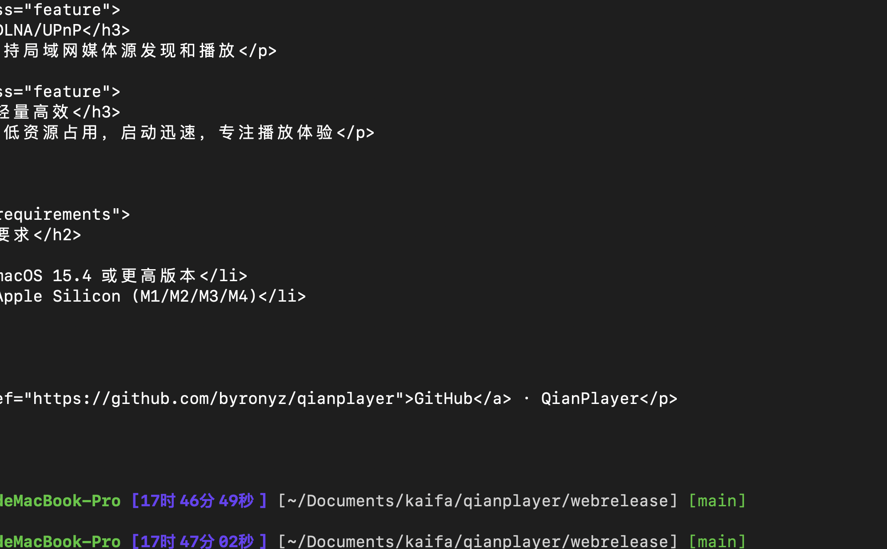

QianPlayer
轻量、快速、功能丰富的 macOS 原生视频播放器
下载最新版本界面预览

综合介绍
QianPlayer 是一款为 macOS 设计的现代视频播放器，原生界面流畅美观，解码能力强大，兼顾极致性能与优雅体验。
原生界面，完美适配系统风格
全格式支持，格式兼容无死角
硬件加速解码，CPU 占用极低
HDR 内容自动识别与渲染
DLNA 投屏接收 / 局域网播放
磁力链接边下边播
画中画 (PiP) 支持
智能文件源管理与播放列表
视频特点
专业级视频渲染能力，满足从日常观看到影音发烧的全场景需求
硬件加速解码
使用 macOS 硬件解码，支持 H.264/H.265/VP9/AV1 等编码格式，CPU 占用极低
HDR 自动适配
自动识别 HDR10/HLG 内容并启用 tone-mapping，在 SDR 显示器上也能正确还原色彩
视频参数调节
亮度、对比度、饱和度、色相、伽马实时调整，支持灰度模式和画面旋转
字幕系统
内置字幕轨道切换，支持 SRT/ASS/SSA/VTT 外挂字幕加载，字幕延迟微调
mpv 解码 · Metal 原生呈现
基于 mpv 核心解码引擎，通过 Metal 原生渲染管线直接输出画面，零拷贝上屏，延迟极低，充分发挥 Apple Silicon GPU 性能
音频特点
高质量音频输出，精细化控制每一个细节
音频轨道管理
多音轨自由切换，支持视频内嵌的所有音频流选择
空间音频
支持空间音频渲染，带来沉浸式环绕声体验
格式全覆盖
支持 AAC/FLAC/Opus/DTS/AC3/TrueHD 等全部主流音频编码
功能特点
围绕播放体验设计的实用功能集
文件源管理
添加本地文件夹作为视频源，自动扫描和索引，支持树形目录浏览和拼音搜索
DLNA / UPnP
作为 DLNA 渲染器接收投屏，手机/电视盒子可直接推送视频到 QianPlayer 播放
磁力链接播放
粘贴磁力链接即可边下边播，实时显示下载进度、速率和连接状态
简拼快搜
输入文件名拼音首字母即可快速定位视频，海量文件也能瞬间找到
播放列表
创建和管理多个播放列表，支持添加、排序、重命名，自动记录播放历史
画中画 (PiP)
一键进入系统画中画模式，浮窗置顶播放，边工作边看视频
系统要求 & 安装说明
下载 DMG 后打开，将 QianPlayer 拖入 Applications 文件夹即可完成安装
最低配置
- macOS 15.0 (Sequoia) 或更高版本
- Apple Silicon 芯片 (M1 / M2 / M3 / M4)
- 约 80 MB 磁盘空间
首次打开提示安全性警告？
- 打开「系统设置」→「隐私与安全性」
- 下滑到「安全性」部分
- 点击「仍要打开」QianPlayer